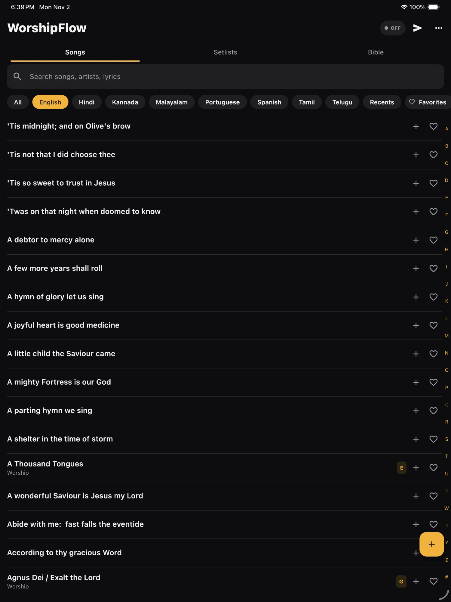
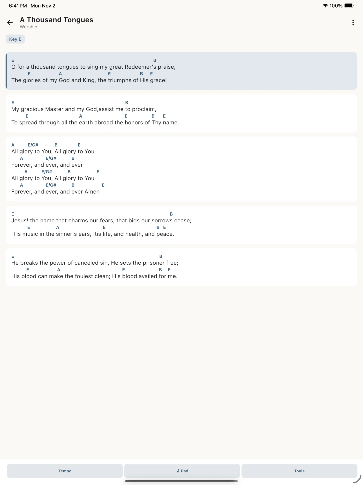
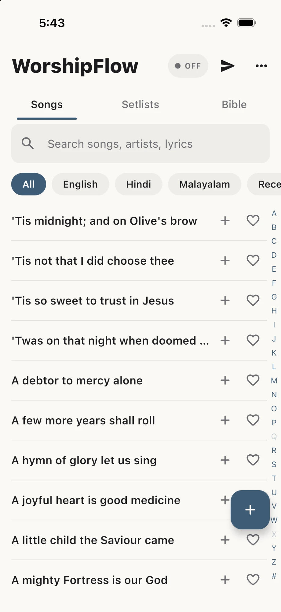
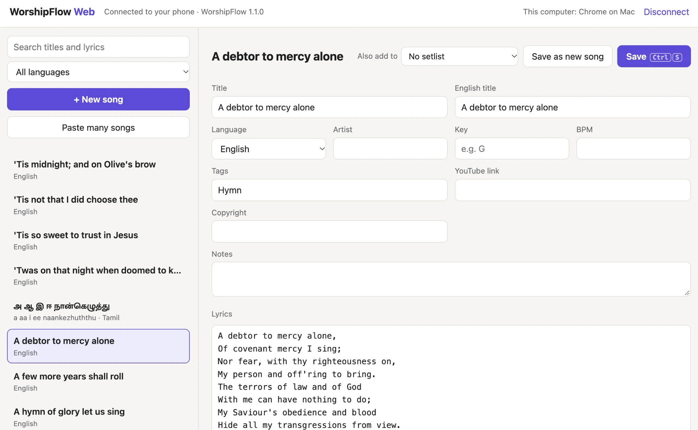
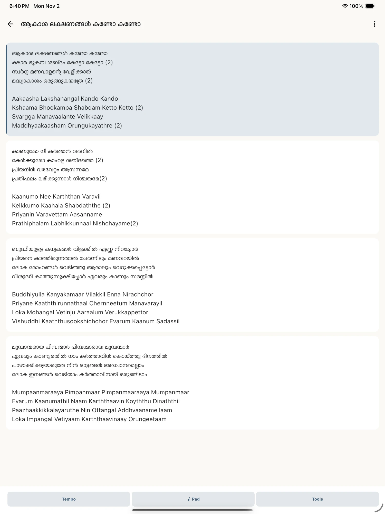

The songbook for worship teams, in Malayalam, Tamil, Hindi and English.
Chords in any key, setlists, and the words on the screen for everyone. Free on iPhone, iPad and Android.
worshipflow
A week with WorshipFlow
On Monday, the leader builds Sunday's setlist from 21,615 songs. Each song can carry its own key, tempo and notes for this service, and the original stays as it was.

On Thursday, new songs go in from a computer. WorshipFlow Web opens in any browser on the same Wi-Fi; you approve the computer on your phone with a matching code, and the songs are saved on the phone, nowhere else.

At rehearsal, everyone reads the same chart. Chords sit above the words in the setlist's key, BandSync puts the current slide on every phone, and the pads and the click follow each song's key and tempo.
On Sunday, the words go up on the screen. Tap a verse to project it; the congregation reads Malayalam with English letters underneath, the live stream gets a lower third, and the stage monitor shows what comes next.
